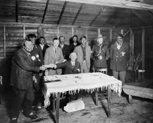

Treaty One, signed on August 3, 1871, near the Red River in Manitoba, was the first of the numbered treaties between the Canadian government and Indigenous nations, including the Anishinaabe and Swampy Cree. It involved the cession of significant land in exchange for promises of reserves, annual payments, and goods such as agricultural implements and education. This treaty significantly impacted Indigenous communities, altering traditional ways of life and governance while raising ongoing issues regarding the fulfillment of treaty promises and the recognition of Indigenous rights. Today, Treaty One remains a foundational document in discussions about reconciliation and the relationship between Indigenous peoples and the Canadian government.

Treaty One remains a cornerstone of Indigenous rights discussions in Canada. Its legacy highlights the ongoing struggles for recognition, restitution, and respect for treaties as sacred agreements. The effects of this treaty continue to resonate today, as Indigenous communities advocate for their rights and seek to reclaim their histories and lands.
NOte treaty one is the first treaty in manitoba